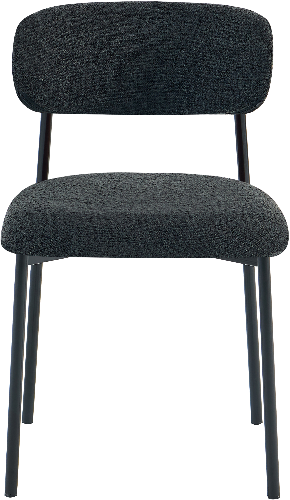
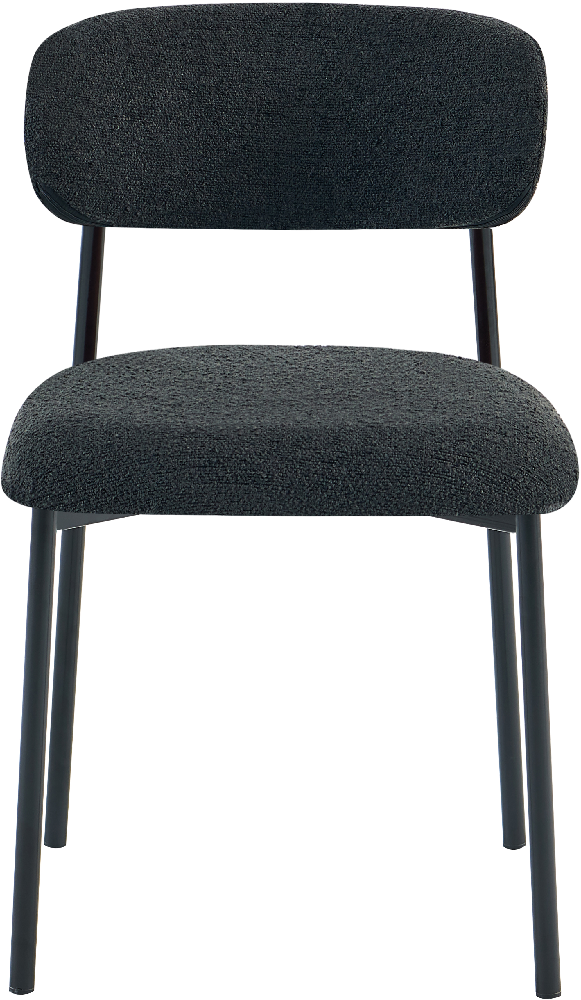
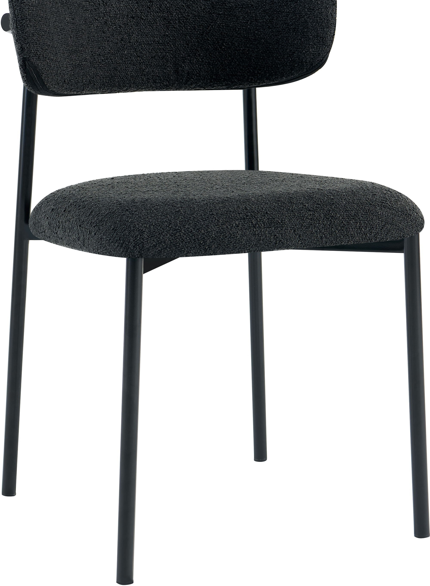
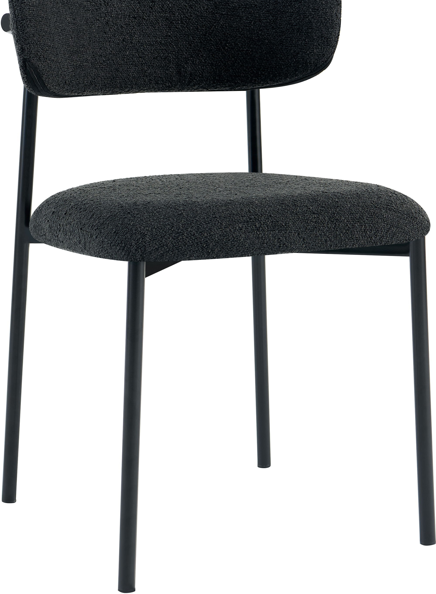

Bow dining table chair black
198100

 


 

Description
The Bow dining table chair in black offers a stylish and comfortable seating solution ideal for modern dining spaces. Upholstered in a durable black fabric, it features a generously padded foam seat designed for extended comfort during meals and gatherings. The chair’s sleek black metal frame ensures lasting durability while adding a contemporary flair to any dining area.
This model belongs to the Gold tier, embodying a perfect balance between quality and affordability within the NEST & LIVING range. With dimensions of 52.5 cm depth, 48 cm width, and 80 cm height, it supports up to 120 kg, accommodating various users conveniently. Assembly is straightforward, requiring less than 15 minutes to put together, making it practical for everyday living.
Designed with a focus on timeless aesthetics and reliable functionality, the Bow chair enhances any home dining experience by combining comfort with minimalist elegance. It is a valuable choice for anyone looking to enrich their space with versatile seating from the NEST & LIVING collection.
Technical specifications
| Color | Black |
|---|---|
| Dimensions (D × W × H) | 52.5 cm × 48 cm × 80 cm |
| Maximum weight load | 120 kg |
| Tier | Gold |
| Frame material | Metal |
| Upholstery | Black fabric with foam padding |
| Assembly required | Yes, approx. 15 minutes |